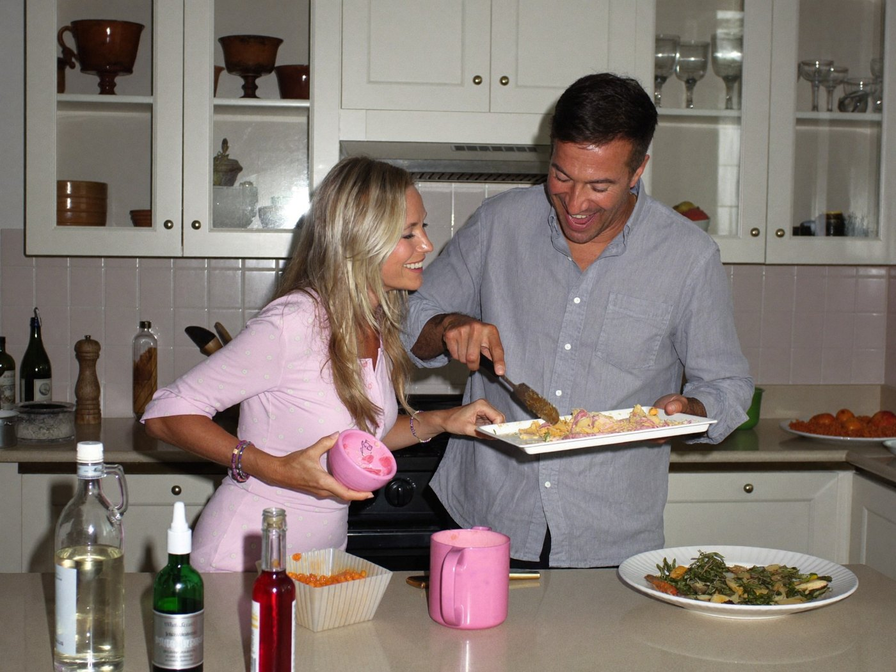

Nadie atraviesa la menopausia sola, aunque a veces lo parezca. Esta parte es para ti y para quienes te rodean: empatía hacia adentro, responsabilidad compartida hacia afuera.

hablarlo cambia todo
En esta parte
08La empatía empieza por ti
09Responsabilidad compartida
10Mitos y preguntas
El peso del silencio
3 de 4
mujeres que nunca trataron sus síntomas genitourinarios tampoco los habían comentado nunca con un profesional.
Cifra aproximada («casi tres cuartas partes»), encuesta a 1.858 mujeres. The Menopause Society, declaración sobre SGM, 2020.